Para acompanhar os projetos que venho desenvolvendo
Portfolio

Behance
Para acompanhar meus estudos de design
Para acompanhar meus artigos sobre tecnolgias
Para acompanhar os projetos que venho desenvolvendo
Para acompanhar meus estudos de design
Para acompanhar meus artigos sobre tecnolgias